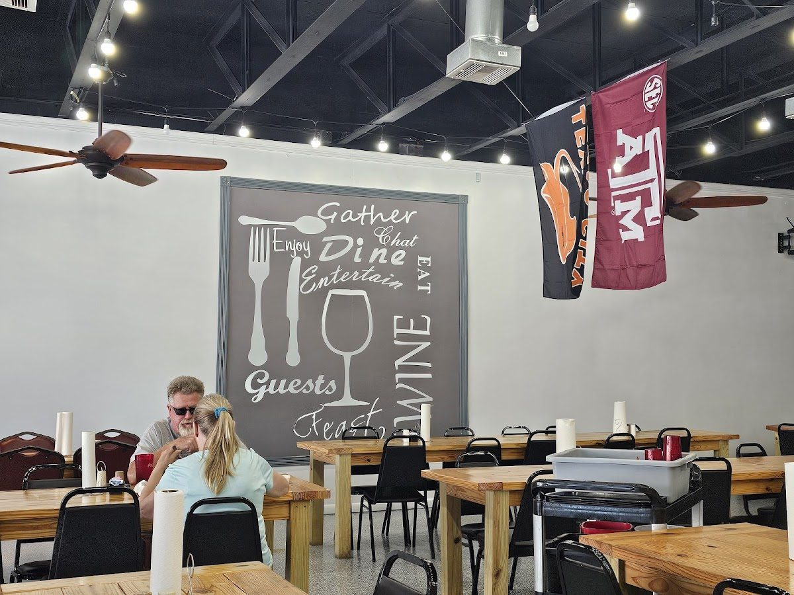
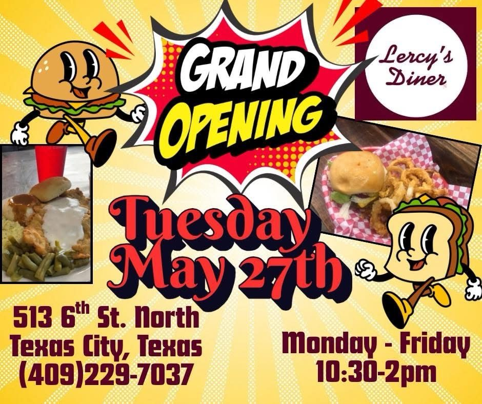

Our Story
From Winnie, Texas to downtown Texas City — built one tray at a time.
Joy & Mark Cooper
Joy Cooper worked in the medical field. Mark Cooper spent twenty years as a salesman. Neither of them came from the restaurant business — they came to it, deliberately, after deciding it was time for something new.
They opened Lercy’s in their hometown of Winnie, Texas, then added a second location in Mont Belvieu. On Tuesday, May 27, 2025, they cut the ribbon on their newest one here in Texas City.
“This is going to be our new home.” Joy Cooper, co-owner — Texas City opening day
Mark handles customer relations. Joy handles the kitchen. Between the two of them, the split is simple: one person makes sure the food is right, the other makes sure you feel welcome.
“It’s always about people.”

The road to 6th Street
- Winnie, Texas — where it started, in their hometown. Still open as The Original Lercy’s.
- Mont Belvieu, Texas — the second location, Lercy’s Diner West.
- Baytown, Texas — Lercy’s Diner South.
- May 27, 2025 — Texas City opens its doors at 513 6th St N, across from the Showboat.
- July 15, 2025 — ribbon cutting with the Texas City–La Marque Chamber.

Cafeteria-style, on purpose
We don’t seat you and hand you a menu. You grab a tray, walk the line, and look at every single thing before you commit to it. It’s faster, it’s honest, and you never order something you haven’t seen.
The daily specials are written on a chalkboard on the wall, right at the line. Sides are made fresh. The potatoes get peeled every morning before we open. The cooks and the owners are in by 7 AM prepping.
Lunch is the whole day here. We open at 10:30 and close at 2:00, and when the food is gone, it’s gone.
Texas City welcomed us in
The City of Texas City
“Your delicious food and friendly service truly give that home-away-from-home feeling, and we are proud you can call Texas City home as well.”
Texas City EDC
The Texas City Economic Development Corporation featured the diner’s 6th Street opening, calling it exactly the kind of downtown business the city wants to see.
Press coverage
KGTX 7 covered the opening: “Lercy’s Diner Opens in Texas City, Marking Third Location for Local Eatery.”
Good Food. Good Mood.
That’s how the owners describe it themselves. It’s on the sign, it’s on the Facebook page, and it’s the whole idea — you come in for lunch, you leave in a better mood than you arrived.